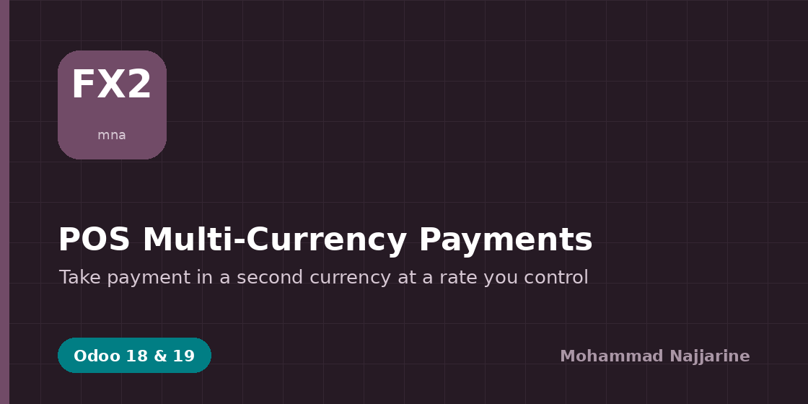
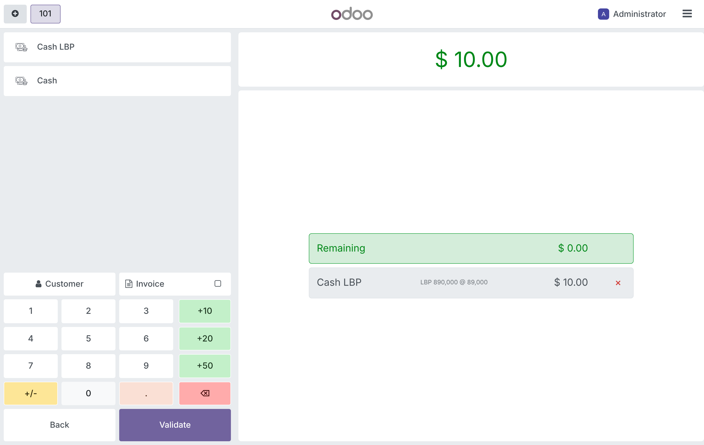
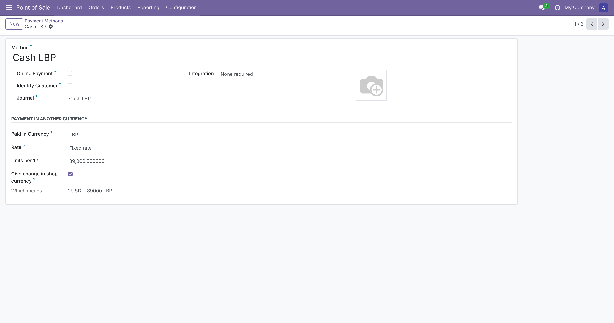

In a dual currency economy the customer pays with whichever note they have, and the shop keeps its books in one currency. Odoo's Point of Sale takes payment only in the shop's currency, so the cashier does the arithmetic on a phone and types the result. That arithmetic is wrong often enough to matter, and when it is wrong there is no record of what was handed over.
This adds a payment method that takes money in another currency, and keeps both figures.
In the other currency. Odoo records the value in yours.
The Odoo rate, or a rate you fix yourself and change when you decide.
Paid amount, shop value and the rate, on every payment.
The session lists what came in per currency, to count the till against.
The line shows what was handed over, the rate it was taken at, and what it is worth. Nothing to work out on a phone.

Pick the currency, pick a fixed rate or the live one, and the method tells you plainly what that rate means before you save it.

A shop with a rate on the wall does not want it moving under the cashier because a feed updated halfway through the day.
The conversion is repeated on the server from the rate on the method. A till left open since yesterday would otherwise book today's takings at yesterday's rate.
So a receipt reprinted next year shows the rate that was charged, not today's.
Because that is what a rate typed into the amount box looks like, and it empties a till by arithmetic rather than by theft.
| Odoo | 18.0 and 19.0, Community or Enterprise |
| Depends on | Point of Sale only |
| Set up | A payment method, its own cash journal, and a rate |
| Tested | 12 automated tests on the arithmetic, plus the payment screen driven end to end in a real session |
Written and maintained by Mohammad Najjarine, Odoo consultant. Questions and bug reports are answered.